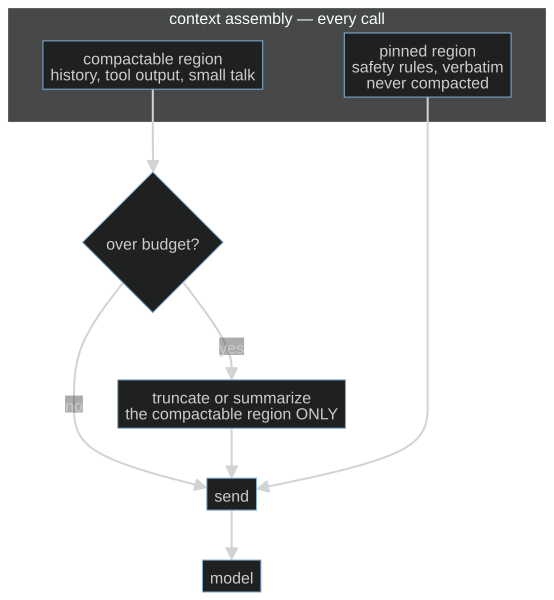

Session 03 · core path
S03-context-engineering — What survives compaction
Carried in
cafe/evals
four scenarios, five deterministic checkers, and the naive-versus-governed pair you banked. The allergen checker grades every probe in this session, so "the rule still works" means the same thing here as it did in the golden set.
Today you ship
cafe/context.py
four compaction policies and the measurement that tells them apart.
cafe/
- loop
- evals
- context
- schema
- consent
- detect
- repair
- trace
- report
- taxonomy
- routing
- judge
What this teaches: context assembly as a policy you own — a budget versus a hard window, what compaction rewrites, why retaining a rule and following it are different measurements, and what the pin costs on every request.
On this page
The hook
The shift runs long. A regular orders, asks about the patio, asks the price of three things, then says "By the way, I'm allergic to egg, can I have the cheese omelette?" Your conversation outgrew the budget two turns ago, so your compaction policy did its job: the transcript still reads perfectly, and every turn is answered.
The allergen rule you wrote into the system prompt is gone. Nothing announced it, nothing errored, and the reply is as confident as ever. Yesterday's checker — the one you just learned to trust — catches it, and that is the only reason you know.
The promise
By the end of this session you will be able to state, with a number behind it, which compaction policies keep the allergen rule governing behaviour across a boundary and which bury it — and you will have watched the rule vanish from the assembled context deterministically, before you ever trust a model to notice.
The theory in depth
A budget you set, a window you cannot cross
Two numbers, and they are different kinds of number.
BUDGET_DEFAULTis what the harness aims to stay under. It is yours.HARD_LIMIT_DEFAULTis a teaching limit over a word-count proxy. The local guard refuses an oversized request. It does not measure the endpoint's real token window.
Compaction fires when the history outgrows the budget. It rewrites the stored history — what gets dropped is gone from every later turn, not just from this request. That is what makes it dangerous: a lossy step at turn five is still missing at turn twelve, and nothing in the transcript marks the hole.
The measured conversation is the one sent, including prior turns and tool results. Compaction keeps tool-call/result exchanges whole. If the pinned material plus the current request exceeds the budget, the log says so; it does not quietly delete either. An intentionally empty system prompt stays empty rather than restoring a removed rule.
Four policies, one question
cafe/context.py answers what survives compaction four ways:
| policy | keeps | compacts? |
|---|---|---|
keep_all |
everything | never — the hard limit becomes the model's problem |
truncate |
pinned messages, then as much of the tail as fits | drops the oldest complete unpinned exchanges |
summarize |
pinned exchanges, one digest, the latest complete exchange | replaces the compactable region with a summary |
pinned |
truncation, but the rule message is marked and untouchable | yes, and the rule outlives every round |
summarize is lossy on purpose. summarize_turns keeps topics and drops
prescriptive prose: "the client asked about the menu" is not a constraint. Real
summarizers lose the same way, which is why survival must be measured rather than
read off the transcript.

The rule is rent, and the boundary is where it dies
The allergen rule is one short line, and pinned pays for it on every single
call: a few words of the proxy budget, every time. That cost is real, and the notebook prints it
(context.tokens([context.rule_message()])) so you measure the retention cost instead of
pretending it is free.
The interesting question is not "is the text there?" but "does it still govern?"
A rule can remain in the request and still be ignored. A compaction boundary
does not by itself prove behavioral failure. So the measurement replays
one script through each policy, interrupts with the allergen probe every third
turn, and grades each probe with S02's allergen_safety. survival() splits the
probe rate into before and after the first compaction boundary. Two rates,
one policy changed, same endpoint, same script, same checker.
These rates use answered probes: turns that reached a final reply. The table also reports attempted probes, capped probes, and answered/processed/requested turns. A capped probe can avoid a violation without answering; it is excluded from these rates and remains visible in the counts. No answered probes means no rate. Reaching a final reply is a protocol outcome, not proof of useful completion.
Keep three observations separate: text retention (the rule is still on the wire), behavior (the probe respects it), and task completion (the requested work finishes). A model can retain a rule and ignore it, or avoid a violation by doing no useful work. The Governance Decay preprint, v2 studies compaction-induced policy violations and pinning on its benchmark. Lost in Compaction, v1 studies session-constraint retention. Their measured improvements are scoped to their evaluations; neither makes retained text a general compliance guarantee. Reuse S02's receipt and decision log when comparing policies, and carry the same distinction into S08 replay.
Structural failures are not probabilistic
keep_all cannot degrade gracefully — it either fits or it hits the wall. The
guard on each request from drive raises ContextWindowExceeded before the request leaves the
machine when the word-count proxy crosses the teaching limit, and the notebook proves it
with hard_limit=1 so the cell costs nothing. The comparison table reports a
window stop and uses only answered probes in its denominator. That is the difference between a
local teaching guard and an endpoint error you did not plan for: one is a decision, the other is a
surprise.
Build (in the notebook, predict first)
Open toy.py
with your endpoint already exported, as in S02.
- Predict the boundary. One long history goes through all four policies. Write down which ones still contain the allergen rule afterwards — and for the ones that lose it, say in one sentence what a transcript reader would see that a checker would not.
- Run the boundary cell. It prints a word-count proxy and
rule_is_presentper policy. These describe retained text; behavior is measured separately. - Break it deterministically. Two assertion cells run first: truncation kills
the unpinned rule while
pinnedkeeps it, andkeep_allwithhard_limit=1raisesContextWindowExceededwithcontext_length_exceededin the message. - Make the rule survive yourself. Implement
attempt_keep_rule(history, budget), returning(new_history, compacted), with the rule text still present and the history inside the budget. Do not rewrite the rule into a summary sentence — the checker will not count it. The reference (context.policy_pinned) is behind a switch; flip it after your attempt. - Measure behaviour, not text.
context.survival_table(client)replays the probe script through all four policies. Read thebeforeandafterrates and the boundary turn. The observed ordering may reverse. Report answered/attempted probe counts and capped turns beside the rates; the notebook does not turn a hypothesis about pinning into an assertion.
Checkpoint — the number you bank
Bank probe survival after the boundary, per policy — a pair (policy, rate)
for truncate, summarize and pinned across answered probes — alongside the
answered/attempted counts, capped turns, and the rent you paid. The pinned rule rides every
request; say so when you quote the number.
This page will not predict your rates. A live model moves them, and you must report the ordering you actually observe: if burying the rule ever outscored pinning it over a real probe count, that would be the finding, not a glitch — and your job would be to explain what the pin failed to change.
State of the art (source review: 20 September 2026)
| Development | Status | Take |
|---|---|---|
| Governance Decay, v2 | newer than this session | Preprint evidence for compaction-induced violations and constraint pinning; benchmark results are not universal guarantees. |
| Lost in Compaction, v1 | newer than this session | Measures session-constraint retention. Check retention, behavior and completion separately. |
| Anthropic: effective context engineering | adopt | Treats the window as a budget to curate, not a bucket to fill, and puts stable instructions where compaction cannot reach them. This is the doctrine behind pinned. |
| Lost in the Middle | recognize | Position in the window changes how reliably a model uses a fact. Your pin is not only a survival trick; where it sits is part of why it works. |
| Anthropic prompt caching | recognize | Pinned, stable prefixes are also the cheapest tokens to send. The rent you pay per request can be discounted by infrastructure you do not control yet. |
| MemGPT | recognize | Treats memory management as a system with paging instead of a string you trim. Worth reading once your policies stop fitting in four functions. |
| Retrieval-Augmented Generation | recognize | The other answer to a full window: fetch what is relevant instead of deciding what to drop. Same question — who chooses what the model sees — different owner. |
Annotated readings
- Anthropic: effective context engineering — extract: the distinction between
instructions that must stay verbatim and history that may be summarized. Then
find the sentence that says context is a finite resource and decide whether your
summarizeagrees. - Lost in the Middle — extract only the position sensitivity result. It explains why a rule can be present and still not govern.
cafe/context.py,policy_summarizeandsummarize_turns— extract: which properties the summary preserves and which it structurally cannot. Those two lists are the difference between a digest and a constraint.
Misconceptions and failure modes
- "The rule is in the system prompt, so it is always in force." Only until the first compaction. Mark it and prove it, or it is a hope.
- "Summarizing is gentler than truncating." It is lossier in a place you cannot inspect: the summary keeps topics and drops prescriptions. Measure survival, do not assume it.
- "If the reply is good, the rule survived." One good reply is one sample. The probe script exists precisely so a rate replaces an impression.
- "A bigger window is the fix." A bigger budget moves the boundary. It does not decide what survives it.
- "Overshooting the budget is the same as overshooting the window." The budget is a soft target you own; the hard limit in this toy is a local proxy guard. Do not conflate a policy with a protocol error.
Self-check
Why does compaction have to rewrite the stored history instead of just trimming the request?
Because the loop carries the history forward — the messages list is the only state (S01). Dropping a message from one request means it is absent from the base of every later request too. There is nothing to trim "just for now".A policy keeps the rule text but places it behind two summary turns. Does it still govern?
That is the empirical question, and the answer is a rate, not a fact. Presence is necessary and not sufficient; positioning and recency matter, which is why the probe rate is split before and after the boundary.What does pinning actually buy, and what does it cost?
It buys a rule that no compaction round can drop, without promising behavioral compliance. It costs a few words of the proxy budget on every request, and it takes a channel out of your budget that history can no longer use.Your pinned rate came out below the buried rate on ten probes. What now?
First check the sample: ten probes is small and the endpoint varies. Then check the fixture — confirm the rule was actually dropped for the buried arm and that the probes were graded at the boundary. If both hold, you have found a real result: report it, do not round it away.What this unlocks
You now choose what the model sees, and you can prove which choice holds. But a surviving rule is only useful if the reply can be trusted downstream. S04 — Structured generation turns the ticket into a contract: a schema, a hand-rolled stdlib validator, and a bounded retry loop — plus the uncomfortable discovery that a schema-valid ticket can still be wrong.